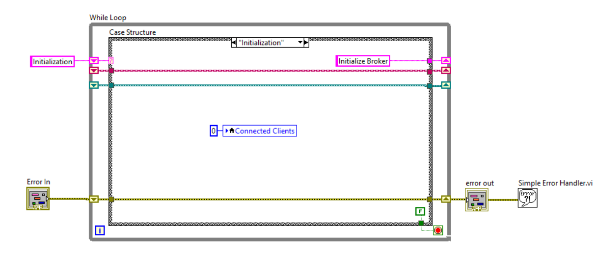

Introduction
The fourth industrial revolution, known as Industry 4.0, is driven by data and machine learning.
The Internet of Things (IoT), cloud computing, AI, Autonomous Robots, and Simulation/Digital Twins are among the cutting-edge technology that companies are integrating into their industrial processes.
In This work, development of an example of Industry 4.0 applications that collabrating each other to control, monitor, store process output data of an airheater device will be presented. Air Heater control application and database applications are developed in LabVIEW and data monitoring application is developed by ASP.NET Core. The data monitoring application is developed on Microsoft Azure cloud service.
- System Sketch
Figure 1 shows system sketch of the process with data flow direction. Air heater control application publish its data to a MQTT broker application and then air heater database application subscribes to the broker and store receiving data in a SQL database. Finally aire heater data monitoring web application visulize the sotred data in the SQL database in chart and figure. The application is developed on Microsodt Azure, however it is also possible to use it locally with a local SQL database.
Figure 1: System sketch of Industry 4.0 applications.
Method and Result
- Development of Air Heater Control Application
- Find PI Parameters by Ziegler–Nichols Method
- MQTT Broker
- Database Control Application
- Data Monitoring Application
The air heater control application is developed in LabVIEW. It reads outlet temperature of air heater mathematical model or actual device and it is filter by a low pass filter function. then it goes to a discrete PI controller to keep the temperature to a setpoint. The temperature data is published to another LabVIEW application which is a MQTT Broker application using MQTT protocol. An MQTT publisher code can be seen below first LabVIEW while loop box. Figure 2 shows screenshot of the air heater control application LabVIEW code. The application has PI controller setting menu that user can can tune the system and also see control signal and process output (temperature) together.
Figure 2: Air Heater Control Application.
Figure 3 shows Ziegler–Nichols osclilations. This osciliations is created by increasing Ti to 10000000 s and KP to 8.7 to create the oscliations to find golden KP from period between oscilations and calculate optimum value
Figure 3: Ziegler–Nichols osclilations.
Figure 4 shows result of the tunning. As it can be seen the control signal and process output is smothly controlled with minimum overshot
Figure 4: Ziegler–Nichols tunned parameteres.
MQTT broker application recieved published messages with topic and then another client can connect and read this data
User is able to set MQTT server URL and port. Also it is possible to see the number of connected cliets to the server (see Figures 5 and 6)
Figure 5: MQTT broker LabVIEW application.
Figure 6: MQTT Broker LabVIEW code.
Figure below shows the code and user interface of the database control application. The published temperature data from air heater control application is read by this application using a MQTT subscrber client. Then the data is stored to a SQL database. This database can be local or on cloud database depending on connection string that currently is set to Microsoft Azure cloud database.
Figures below show the main screen and code of the database application in LabVIEW
Figure 7: Database monitoring LabVIEW application.
Figure 8: Database monitoring LabVIEW code.
Data monitoring application is an ASP.NET Core application. It reads store data in SQL database and plot the data as well as shows the data on a table with date and time and id number
The application is developed on Microsoft Azure. Figures below show main screen of data monitoring web application and last measured data as well as data chart.
Figure 9: Main screen of data monitoring application.
Figure 10: Last measured data page from data monitoring application.
Figure 11: chart page of data monitoring application.
Discussion and Conclusion
The mentioned applications successfully were created and tested. The data monitoring web application is deployed on Microsoft Azure. MQTT was used to published Air Heater outlet temperature. MQTT Broker and Publisher code could be more secure by adding authentication and input data validation.
Regarding cyber security, typical examples of SQL injection includes:- Retrieving hidden data, where in scenario you can change a SQL query to get more information.
- Modifying a query to interact with the logic of the application, which is exploiting application logic. Data can be retrieved from different database tables.
These could be prevented by input validation and parametrized queries inside application.
In terms of MQTT Security Issues:- Maybe a user can Subscribe to published data on Broker without athutentican.
- Also a user may published SQL injection queries by sending malicious topic and message to the broker.